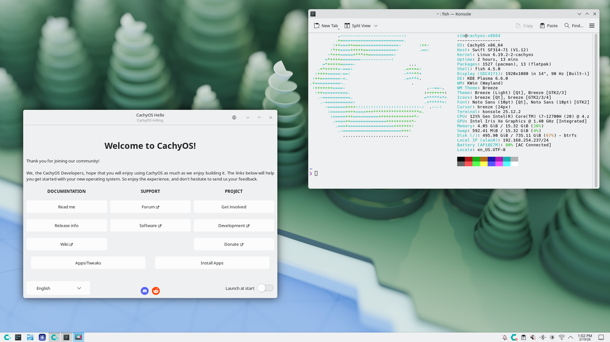
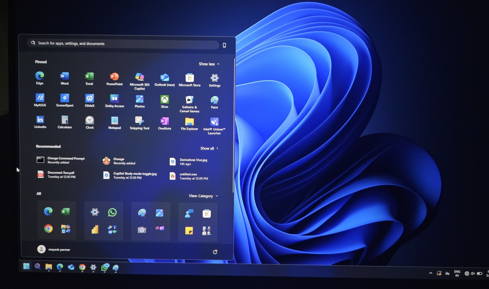

Töö eesmärk on võrrelda Arch Linuxil põhinevat CachyOS-i töölauaväljaannet ja Windows 11 Home’i. Võrdlus põhineb dokumentatsioonil, mitte operatsioonisüsteemide paigaldamisel või jõudlustestidel.
| Näitaja | Linuxi distributsioon | Windows 11 |
|---|---|---|
| Süsteemi nimi | CachyOS Desktop Edition | Windows 11 Home |
| Võrreldav versioon | Jooksev väljalase (rolling release), dokumentatsiooni seis 08.10.2026. Kindlat püsivat versiooninumbrit ei kasutata; ISO kuupäev tähistab paigaldusmeedia hetktõmmist. | Versioon 25H2. Võrdluseks on valitud see konkreetne versioon; see ei tähenda väidet, et see on uusim Windowsi väljalase. |
| Töölauakeskkond | KDE Plasma. KDE täpne paketi versioon sõltub uuendamise hetkest. | Windowsi töölaud: Start-menüü, tegumiriba ja File Explorer. |
CachyOS võimaldab valida mitme töölauakeskkonna vahel. Selles töös käsitlen ainult KDE Plasma valikut. [1]
| Võrdluspunkt | CachyOS koos KDE Plasmaga | Windows 11 Home 25H2 |
|---|---|---|
| Väljalase ja uuendusmudel | Jooksev väljalase: süsteemi ja rakenduste paketid uuenevad pidevalt. Uus ISO lihtsustab uut paigaldust, kuid olemasolevat süsteemi saab ajakohastada paketihalduriga. [2] | 25H2 avaldati 30.09.2025. Windowsil on versioonipõhised funktsiooniuuendused ja regulaarsed kvaliteedi- ning turvauuendused. Home’i 25H2 toe lõpp on 12.10.2027. [3] |
| Ressursinõuded | Minimaalsed: 3 GB RAM-i, 30 GB kettaruumi ja stabiilne internet. Juhend ei anna minimaalset protsessori taktsagedust ega tuumade arvu. Soovitatavad: x86-64-v3 võimekusega protsessor, 8 GB RAM-i, 50 GB SSD/NVMe ruumi ja vähemalt 50 Mbit/s internet. Graafika näited: NVIDIA GTX 950 või uuem vastav kaart, AMD GCN 1.0+ või Intel HD Graphics / Arc. Need on üldised CachyOS-i nõuded, mitte KDE eraldi mõõdetud nõuded. [4] | Minimaalsed: ühilduv 64-bitine protsessor vähemalt 1 GHz ja vähemalt kahe tuumaga; 4 GB RAM-i; 64 GB salvestusruumi; UEFI ja Secure Booti võimekus; TPM 2.0; DirectX 12 graafika koos WDDM 2.0 draiveriga; üle 9-tolline 720p ekraan, 8 bitti värvikanali kohta. Home’i esmasel seadistamisel on vaja internetti ja Microsofti kontot. Viidatud nõueteleht ei esita eraldi universaalset soovituslikku RAM-i või kettaruumi nõuet. [5] |
| Otstarve | Igapäevane arvutikasutus, õppimine, programmeerimine ja mängimine. Arendajad rõhutavad jõudlusele suunatud optimeerimist; tegelik kiirus sõltub riistvarast ja ülesandest. [2] | Kodukasutus, õppimine, veeb, meelelahutus ja mängimine. Sobivus konkreetsele õppe- või tööülesandele sõltub vajalike rakenduste ühilduvusest; Home’il puuduvad mõned Pro ettevõttehalduse võimalused. |
| Toetatavad arhitektuurid | 64-bitine x86-64; optimeeritud paketid x86-64-v3 ja x86-64-v4 ning Zen4+ jaoks. Need on x86-64 optimeerimistasemed, mitte ARM64. Selles võrdluses käsitletud Desktop Edition ei ole ARM64 väljaanne. [2] | x64 (x86-64) ja ARM64 ühilduvatel seadmetel. 32-bitist x86 Windows 11 väljaannet ei ole. ARM64 ja x64 puhul tuleb arvestada draiverite ning rakenduste sobivusega. [3] |
| Tuuma tüüp | Linux: monoliitne tuum, mis toetab laaditavaid mooduleid. CachyOS kasutab oma optimeeritud Linuxi tuuma. | Windows NT: tavaliselt liigitatakse hübriidtuumaks. Süsteemis on kasutajarežiimi ja tuumarežiimi komponendid. [6] |
| Lähtekood | Linuxi tuum ja KDE Plasma on avatud lähtekoodiga. Linuxi tuuma põhilitsents on GPL-2.0-only. Kõik paigaldatud komponendid ei pruugi olla avatud: näiteks osa draivereid ja püsivara võib olla suletud. [7] | Windowsi tuum ja peamine töölaualiides on suletud lähtekoodiga ning omandusliku litsentsiga. Mõned kaasnevad Microsofti projektid, näiteks Windows Terminal, on avatud lähtekoodiga; see ei muuda Windowsi tervikuna avatuks. |
Minimaalsed ja soovitatavad n?uded: minimaalsed n?uded ei t?henda soovitatavat konfiguratsiooni. ?lal esitatud n?uete p?hjal ei saa ?ksinda j?reldada, kumb s?steem t??tab konkreetses ?lesandes kiiremini.
Sarnasus: mõlemad on graafilised töölauad, kus saab avada rakendusi menüüst, otsida neid nime järgi, kasutada tegumiriba ning hallata faile kaustades. Mõlemad võimaldavad muuta taustapilti ja värviteemat.
| Tegevus | CachyOS / KDE Plasma | Windows 11 |
|---|---|---|
| Rakenduste avamine ja otsimine | Rakenduste käivitaja menüü ja KRunner. KRunner saab lisaks rakendustele avada dokumente ning täita käske. [8] | Start-menüü ja Windows Search. Rakendusi saab kinnitada Start-menüüsse või tegumiribale. [9] |
| Failide ja kaustade haldamine | Dolphin: failide kopeerimine, teisaldamine, kustutamine, vahekaardid ja jagatud vaade. Linuxis algab failipuu juurest / ning kasutaja failid paiknevad tavaliselt /home/kasutajanimi all. | File Explorer: samad põhilised failitoimingud ja vahekaardid. Kettad on tavaliselt tähistatud tähtedega, näiteks C:, ning kasutaja failid paiknevad C:\Users all. |
| Seadistuste leidmine | System Settings koondab võrgu, ekraani, heli ja välimuse seadistused. | Settings koondab peamised seadistused; osa vanemaid valikuid on endiselt Control Panelis. |
| Töölaua kohandamine | Paneele saab liigutada ja lisada, muuta vidinaid, ikoone, teemasid ning akende käitumist. [1] | Saab muuta tausta, värve, teemasid ja Start-menüü joondust. Sisseehitatud tegumiriba ning töölaua paigutuse valikud on piiratumad. [10] |
Erinevus 1: KDE Plasma pakub rohkem paneelide ja töölauavidinate kohandamise võimalusi. Erinevus 2: failihaldurid ja failisüsteemi ülesehitus erinevad: Dolphin ja /-juur võrreldes File Exploreri ning kettatähtedega. Erinevus 3: KDE kasutab KRunnerit, Windows Start-menüü otsingut.


CachyOS:
Windows 11:
CachyOS-i rakenduste komplekt sõltub paigaldajas valitud töölauast ja pakettidest. KDE valikuga kaasnevate rakenduste näited on allpool; paigaldaja paketinimekiri on avalik. Windowsi komplekt võib samuti seadme tootja, piirkonna ja paigaldusmeedia järgi erineda. [13]
| Otstarve | CachyOS KDE valiku rakendus | Windows 11 tavapärane kaasasolev rakendus |
|---|---|---|
| Failide haldamine | Dolphin | File Explorer |
| Teksti redigeerimine | Kate – lihttekst ja programmikood | Notepad – lihttekst |
| Ekraanipildid | Spectacle | Snipping Tool |
| Piltide vaatamine | Gwenview | Photos |
| Lisatööriist | Konsole – terminal käskude käivitamiseks | Microsoft Edge – veebibrauser |
Lisaks paigaldatavad rakendused: näiteks LibreOffice ja Steam CachyOS-is ning Microsoft 365 töölauarakendused ja Steam Windowsis. Neid ei saa pidada kummagi süsteemi kohustuslikuks eelpaigaldatud osaks. Microsoft 365 töölauarakenduste kasutamine eeldab sobivat litsentsi.
CachyOS: rakendusi saab Archi ja CachyOS-i hoidlatest paketihalduriga pacman. Näiteks sudo pacman -S libreoffice-fresh paigaldab LibreOffice’i. Käsk sudo pacman -Syu uuendab koos nii süsteemi kui ka hoidlatest paigaldatud rakendusi. AUR pakub kogukonna koostatud pakendusskripte, mida saab kasutada näiteks paru kaudu; see ei ole ametlik binaarpakettide hoidla ja skripte tuleb enne kasutamist hinnata. Graafiline paketihaldur on võimalik, kuid selle olemasolu ei tohi kõigi paigalduste puhul eeldada. Jooksva väljalaske korral tuleb enne suuremaid uuendusi lugeda teateid, sest vahel on vaja käsitsi sekkuda. [14]
Windows 11: rakendusi saab Microsoft Store’ist, tootjate ametlikelt veebilehtedelt EXE- või MSI-paigaldajatena ning käsurealt wingetiga. Windows Update uuendab operatsioonisüsteemi ja pakub osa draiveriuuendusi. Store uuendab sealt paigaldatud rakendusi; mujalt saadud programmid kasutavad oma uuendajat või vajavad eraldi uuendamist. Seega ei sõltu kõik rakenduste uuendused Windows Update’ist.
Mõlemad süsteemid sobivad veebikasutuseks, õppimiseks ja igapäevaseks failihalduseks. CachyOS-i tugevused on avatud põhikomponendid, KDE ulatuslik kohandamine ja pidevalt uuenev paketivalik. Windows 11 sobivus on eriti oluline siis, kui õppetöö või töö nõuab konkreetseid Windowsi rakendusi. CachyOS-i valides tuleb kontrollida vajalike programmide ja mängude ühilduvust ning olla valmis süsteemi hooldama; Windowsi puhul tuleb kontrollida riistvaranõuete täitmist ja arvestada litsentsiga.
Minu hinnangul sobib CachyOS kasutajale, kes soovib Linuxit tundma õppida ja oma töökeskkonda põhjalikult kohandada. Windows 11 sobib kasutajale, kelle vajalik tarkvara on mõeldud Windowsile. Dokumentatsiooni põhjal ei saa usaldusväärselt otsustada, kumb on igas olukorras kiirem või kasutab vähem ressursse.